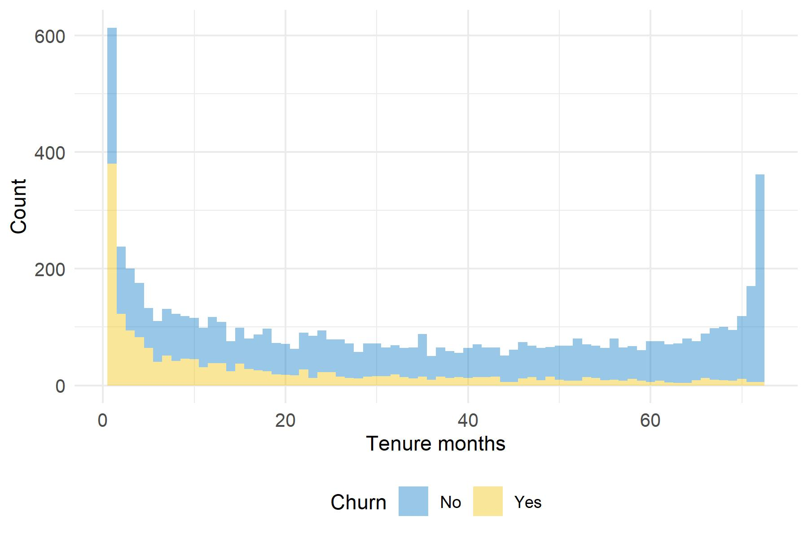

5.3 Churn, duration and price
The final step in the data exploration consists in analysing the relationship between the Monthly_Charges, Churn_Label and Tenure_Months variables as they play an important role in the modelling strategy we adopt to estimate customer value.
Looking at figure 5.4, monthly charges seem to be higher for churners than for retained customers as the density is more right-oriented. High fees might be a driver of customer churn.
Figure 5.4: Monthly charges paid by customers depending on churn status
Besides, the low p value related to the Anova test between CLTV and Churn_Label indicates that customer lifetime value is statistically different between churner and retained clients.
| F statistic | Df1 | Df2 | p-value | |
|---|---|---|---|---|
| Churn_Label | 271.58 | 1 | 7030 | 6.8e-60 |
The following histograms are interesting to the extent that the distribution of Tenure_Months depends on the churn status. From figure 5.5, one can note an inflation of low and high values for retained customers. The distribution appears to be more homogeneous for retained clients than for churners. These lasts’ tenure months distribution is decreasing and looks like a Poisson distribution with an inflation of low values.
Figure 5.5: Tenure months depending on churn status
Eventually, figure 5.6 depicts the average monthly charges per number of months in the portfolio. One can notice an increasing evolution between the average monthly fees and the number of months. In other words, it might be assumed that customers with longer lifetimes bring in more money to the firm.
Figure 5.6: Average monthly fees depending on number of months in the portfolio